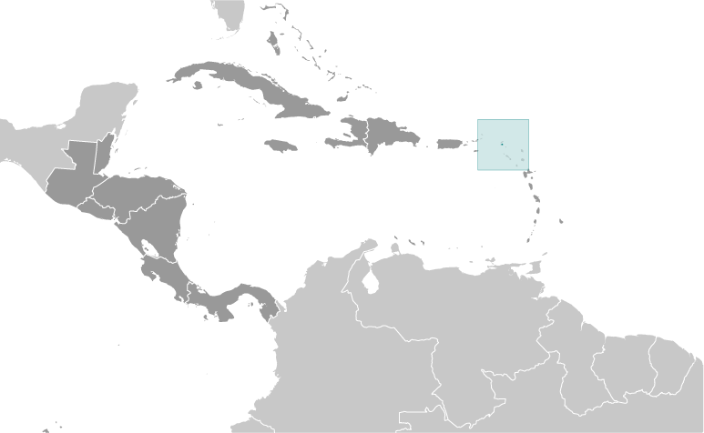
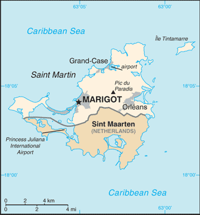
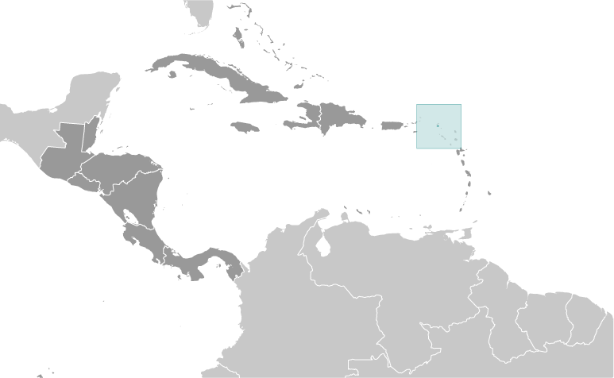
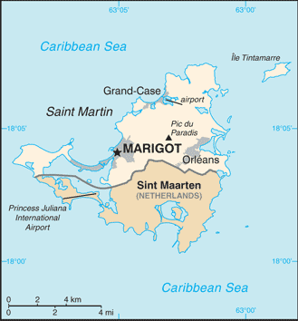

-
Introduction :: Saint Martin
-
Background:Although sighted by Christopher COLUMBUS in 1493 and claimed for Spain, it was the Dutch who occupied the island in 1631 to exploit its salt deposits. The Spanish retook the island in 1633, but continued to be harassed by the Dutch. The Spanish finally relinquished Saint Martin to the French and Dutch, who divided it between themselves in 1648. Friction between the two sides caused the border to frequently fluctuate over the next two centuries, with the French eventually holding the greater portion of the island (about 61%). The cultivation of sugar cane introduced African slavery to the island in the late 18th century; the practice was not abolished until 1848. The island became a free port in 1939; the tourism industry was dramatically expanded during the 1970s and 1980s. In 2003, the populace of Saint Martin voted to secede from Guadeloupe and in 2007, the northern portion of the island became a French overseas collectivity. In 2010, the southern Dutch portion of the island became the independent nation of Sint Maarten within the Kingdom of the Netherlands. On 6 September 2017, Hurricane Irma passed over the island of Saint Martin causing extensive damage to roads, communications, electrical power, and housing; the UN estimated that 90% of the buildings were damaged or destroyed.
-
Geography :: Saint Martin
-
Location:Caribbean, located in the Leeward Islands (northern) group; French part of the island of Saint Martin in the Caribbean Sea; Saint Martin lies east of the US Virgin IslandsGeographic coordinates:18 05 N, 63 57 WMap references:Central America and the CaribbeanArea:total: 54.4 sq kmland: 54.4 sq kmwater: negligiblecountry comparison to the world: 231Area - comparative:more than one-third the size of Washington, DCLand boundaries:total: 16 kmborder countries (1): Sint Maarten 16 kmCoastline:58.9 km (for entire island)Climate:temperature averages 27-29 degrees Celsius all year long; low humidity, gentle trade winds, brief, intense rain showers; hurricane season stretches from July to NovemberElevation:0 m lowest point: Caribbean Ocean424 highest point: Pic du ParadisNatural resources:saltPopulation distribution:most of the population is found along the coast, with a largest concentrations around the capital Marigot, Orleans, and Grand-CaseNatural hazards:subject to hurricanes from July to NovemberEnvironment - current issues:excessive population pressure (increasing settlement); waste management; salinity intrusions into the main land of the island; fresh water supply is dependent on desalination of sea water; over exploitation of marine resources (reef fisheries, coral and shell); indiscriminate anchoring of boats damages coral reefs,causing underwater pollution and changes the sediment dynamics of Saint Martin's IslandGeography - note:the southern border is shared with Sint Maarten, a country within the Kingdom of the Netherlands; together, these two entities make up the smallest landmass in the world shared by two self-governing states
-
People and Society :: Saint Martin
-
Population:32,284 (July 2018 est.)country comparison to the world: 216Ethnic groups:other Creole (mulatto), black, Guadeloupe Mestizo (French-East Asia), white, East IndianLanguages:French (official), English, Dutch, French Patois, Spanish, Papiamento (dialect of Netherlands Antilles)Religions:Roman Catholic, Jehovah's Witness, Protestant, HinduAge structure:0-14 years: 26.05% (male 4,184 /female 4,225)15-24 years: 10.29% (male 1,638 /female 1,685)25-54 years: 46.52% (male 7,181 /female 7,836)55-64 years: 8.76% (male 1,317 /female 1,511)65 years and over: 8.38% (male 1,195 /female 1,512) (2018 est.)population pyramid:
 The World Factbook Field Image ModalCentral America :: Saint Martin Print
The World Factbook Field Image ModalCentral America :: Saint Martin Print Image DescriptionThis is the population pyramid for Saint Martin. A population pyramid illustrates the age and sex structure of a country's population and may provide insights about political and social stability, as well as economic development. The population is distributed along the horizontal axis, with males shown on the left and females on the right. The male and female populations are broken down into 5-year age groups represented as horizontal bars along the vertical axis, with the youngest age groups at the bottom and the oldest at the top. The shape of the population pyramid gradually evolves over time based on fertility, mortality, and international migration trends.
Image DescriptionThis is the population pyramid for Saint Martin. A population pyramid illustrates the age and sex structure of a country's population and may provide insights about political and social stability, as well as economic development. The population is distributed along the horizontal axis, with males shown on the left and females on the right. The male and female populations are broken down into 5-year age groups represented as horizontal bars along the vertical axis, with the youngest age groups at the bottom and the oldest at the top. The shape of the population pyramid gradually evolves over time based on fertility, mortality, and international migration trends.
For additional information, please see the entry for Population pyramid on the Definitions and Notes page under the References tab.Median age:total: 32.8 yearsmale: 31.9 yearsfemale: 33.7 years (2018 est.)country comparison to the world: 97Population distribution:most of the population is found along the coast, with a largest concentrations around the capital Marigot, Orleans, and Grand-CaseSex ratio:at birth: 1.03 male(s)/female (2017 est.)0-14 years: 0.99 male(s)/female (2017 est.)15-24 years: 0.99 male(s)/female (2017 est.)25-54 years: 0.91 male(s)/female (2017 est.)55-64 years: 0.87 male(s)/female (2017 est.)65 years and over: 0.81 male(s)/female (2017 est.)total population: 0.93 male(s)/female (2017 est.)Major infectious diseases:note: active local transmission of Zika virus by Aedes species mosquitoes has been identified in this country (as of August 2016); it poses an important risk (a large number of cases possible) among US citizens if bitten by an infective mosquito; other less common ways to get Zika are through sex, via blood transfusion, or during pregnancy, in which the pregnant woman passes Zika virus to her fetus
-
Government :: Saint Martin
-
Country name:conventional long form: Overseas Collectivity of Saint Martinconventional short form: Saint Martinlocal long form: Collectivite d'outre mer de Saint-Martinlocal short form: Saint-Martinetymology: explorer Christopher COLUMBUS named the island after Saint MARTIN of Tours because the 11 November 1493 day of discovery was the saint's feast dayDependency status:overseas collectivity of France
note: the only French overseas collectivity that is part of the EU
Government type:parliamentary democracy (Territorial Council); overseas collectivity of FranceCapital:name: Marigotgeographic coordinates: 18 04 N, 63 05 Wtime difference: UTC-4 (1 hour ahead of Washington, DC, during Standard Time)Independence:none (overseas collectivity of France)National holiday:Fete de la Federation, 14 July (1790); note - local holiday is Schoelcher Day (Slavery Abolition Day) 12 July (1848)Constitution:history: 4 October 1958 (French Constitution) (2018)amendments: amendment procedures of France's constitution apply (2018)Legal system:French civil lawCitizenship:see FranceSuffrage:18 years of age, universalExecutive branch:chief of state: President Emmanuel MACRON (since 14 May 2017); represented by Prefect Anne LAUBIES (since 8 June 2015)head of government: President of Territorial Council Daniel GIBBS (since 2 April 2017); First Vice President Valerie DAMASEAU (since 2 April 2017)cabinet: Executive Council; note - there is also an advisory economic, social, and cultural councilelections/appointments: French president directly elected by absolute majority popular vote in 2 rounds if needed for a 5-year term (eligible for a second term); prefect appointed by French president on the advice of French Ministry of Interior; president of Territorial Council elected by its members for a 5-year term; election last held on 26 March 2017election results: Daniel GIBBS (TDG) elected president; Territorial Council vote - 18 votes, 4 blank, 1 invalidLegislative branch:description: unicameral Territorial Council (23 seats; members directly elected by absolute majority vote in 2 rounds if needed to serve 5-year terms); Saint Martin elects 1 member to the French Senate and one member (shared with Saint Barthelemy) to the French National Assemblyelections: Territorial Council - last held on 18 and 25 March 2017 (next to be held in March 2022)election results: Territorial Council - percent of vote by party (first round) - TDG 49.1%, MJP 13.7%, MVP 12.3%, HOPE 8.7%, Continuons pour Saint-Martin 6.5%, other 9.7%; seats by party - NA; percent of vote by party (second round) - TDG 64.3%, MJP 24.2%, MVP 11.5.5%; seats by party - TDG 18, MJP 4, MVP 1French Senate - held on 28 September 2014 (next to be held not later than September 2020) French National Assembly - last held on 11 and 18 June 2017 (next to be held by June 2022) French Senate - 1 seat: UMP 1 French National Assembly - 1 seat: UMP 1Political parties and leaders:Continuons pour St. Martin [Aline HANSON]
En marche vers le progres or MVP [Alain RICHARDSON]
Gereration Hope or HOPE [Jules CHARVILLE]
Movement for Justice and Prosperity or MJP [Louis MUSSINGTON]
New Direction [Jeanne VANTERPOOL]
Rally Responsibility Success (Rassemblement Responsabilite Reussite or RRR [Alain RICHARDSON]
Team Daniel Gibbs 2017 or TDG [Daniel GIBBS]
Union for Progress (Union Pour le Progres or UPP) [Louis-Constant FLEMING]; affiliated with UMPInternational organization participation:UPUDiplomatic representation in the US:none (overseas collectivity of France)Diplomatic representation from the US:none (overseas collectivity of France)Flag description:the flag of France is usedNational symbol(s):brown pelicanNational anthem:name: O Sweet Saint Martin's Landlyrics/music: Gerard KEMPSnote: the song, written in 1958, is used as an unofficial anthem for the entire island (both French and Dutch sides); as a collectivity of France, in addition to the local anthem, "La Marseillaise" remains official on the French side (see France); as a constituent part of the Kingdom of the Netherlands, in addition to the local anthem, "Het Wilhelmus" remains official on the Dutch side (see Netherlands)
-
Economy :: Saint Martin
-
Economy - overview:
The economy of Saint Martin centers on tourism with 85% of the labor force engaged in this sector. Over one million visitors come to the island each year with most arriving through the Princess Juliana International Airport in Sint Maarten. The financial sector is also important to Saint Martin’s economy as it facilitates financial mediation for its thriving tourism sector. No significant agriculture and limited local fishing means that almost all food must be imported. Energy resources and manufactured goods are also imported, primarily from Mexico and the US. Saint Martin is reported to have one of the highest per capita income in the Caribbean. As with the rest of the Caribbean, Saint Martin’s financial sector is having to deal with losing correspondent banking relationships.
In September 2017, Hurricane Irma destroyed 95% of the French side of Saint Martin. Along the coastline of Marigot, the nerve center of the economy, the storm wiped out restaurants, shops, banks and open-air markets impacting more than 36,000 inhabitants.
GDP (purchasing power parity):$561.5 million (2005 est.)country comparison to the world: 212GDP (official exchange rate):$561.5 million (2005 est.)GDP - per capita (PPP):$19,300 (2005 est.)country comparison to the world: 92GDP - composition, by sector of origin:agriculture: 1% (2000)industry: 15% (2000)services: 84% (2000)Industries:tourism, light industry and manufacturing, heavy industryLabor force:17,300 (2008 est.)country comparison to the world: 214Labor force - by occupation:85 directly or indirectly employed in tourist industryImports - commodities:crude petroleum, food, manufactured itemsExchange rates:euros (EUR) per US dollar -0.885 (2017 est.)0.903 (2016 est.)0.9214 (2015 est.)0.885 (2014 est.)0.7634 (2013 est.) -
Energy :: Saint Martin
-
Electricity access:population without electricity: 3,194 (2012)electrification - total population: 91% (2012)electrification - urban areas: 100% (2012)electrification - rural areas: 80% (2012)
-
Communications :: Saint Martin
-
Telephone system:general assessment: fully integrated access (2009)domestic: direct dial capability with both fixed and wireless systems (2009)international: country code - 590; undersea fiber-optic cable provides voice and data connectivity to Puerto Rico and Guadeloupe (2009)Broadcast media:1 local TV station; access to about 20 radio stations, including RFO Guadeloupe radio broadcasts via repeater (2008)Internet country code:.mf; note - .gp, the Internet country code for Guadeloupe, and .fr, the Internet country code for France, might also be encounteredInternet users:total: 1,100 (July 2016 est.)percent of population: 3.5% (July 2016 est.)country comparison to the world: 222
-
Transportation :: Saint Martin
-
Airports:1 (2013)country comparison to the world: 235Airports - with paved runways:total: 1 (2017)914 to 1,523 m: 1 (2017)Transportation - note:nearest airport for international flights is Princess Juliana International Airport (SXM) located on Sint Maarten
-
Military and Security :: Saint Martin
-
Military - note:defense is the responsibility of France
Central America ::
Saint Martin